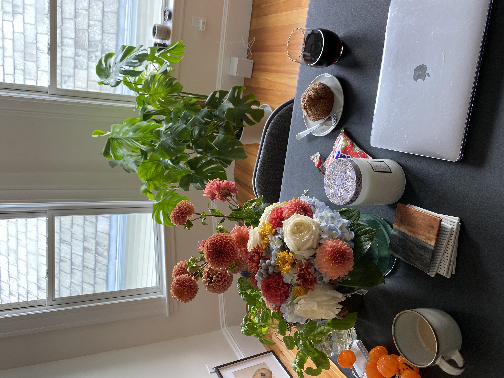
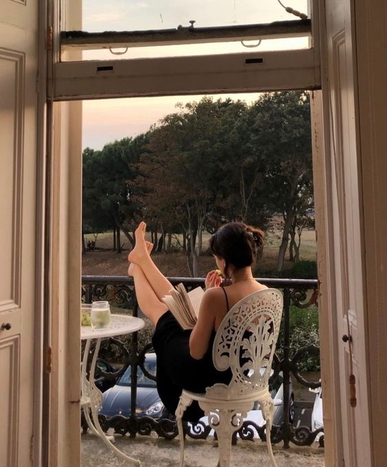

About
Hello! I am originally from Changwon, a beautiful city in S. Korea, and I came to the US at 16. I moved a lot and experienced diverse towns and people while I was in Korea: Changwon, Busan, A-san, Jeju Island, Miryang, and Yangsan. I also spent some high school time in Pennsylvania as an exchange student.With my personality and growing background, I am a very independent and curious individual who loves puzzles.
I am now a senior studying Computer Science and Mathematics at Mount Holyoke College in South Hadley, MA. Also, I am a Computer Science PhD applicant for the Fall 2024.
Research Interest: I am driven to create secure and equitable software applications, focusing on enhancing algorithms to ensure universal benefit through ethical and responsible data management practices.
TV Show I've Been Into: "Coded Bias", "Hospital Playlist" on Netfix
My Recommended Book: "Weapons of Math Destructions" by Cathy O'Neil, "Who Moved My Cheese?" by Spencer Johnson
Education Journey
B.A. in Computer Science & Mathematics, Mount Holyoke College (2021.9 - 2024.05)
Courses I enjoyed: Optimizations, Machine Learning, Real Analysis, Computer Visions, Intermediate Statistics, Operating System, Intro to Computing System, Macroeconomic TheoryAward: MHC Leadership and Service Award (2023)
Taking Advantage of Five College Consortium, I was able to explore diverse courses at Five Colleges:
UMass Amherst COMPSCI 311 Introduction to Algorithms , COMPSCI 220 Programming Methodology
Amherst College MATH-250 Number Theory (enrolled for Spring 2024)
[Transferred] Course Credit, Ohio Wesleyan University (2019.08 - 2020.05)
Academic Honor: Dean’s List, OWU Bashford International Scholar (2019-2020, $43,000 per year)Research Experience
Exploratory Study for the Development of a Social Vulnerability Scoring System to Inform Equitable Maternal and Child Healthcare Resource Allocation in Massachusetts
[Title: TBD] A Scoping Review of Risk Factors for Healthcare Access Disparities Among Mothers and InfantsYeahne Kim, Yukti Kathuria, Muge Capan, Chaitra Gopalappa (expected Spring 2024)
Supervisor: Muge Capan, Mechanical & Industrial Engineering Department at UMass Amherst
Teaching Experience
Korean Language Assistant
Mount Holyoke College, South Hadley, MAAs the sole general manager, I coordinated & led 10+ program events and workshops in the department and oversaw the performances of 50 students in the program.
English Teacher
Saida Private English & Math Institute, Miryang, South KoreaI taught 30+ high school students English at an after-school academic institute in S.Korea during my gap year in college.
Teaching Assistant
Summit School, Daejung Global Education City, Jeju Island, South KoreaI assisted a class consisting of 12 elementary students, specifically designed to cultivate creativity and enhance critical thinking skills as part of a summer project school.
Notable Projects 📝
Development of a Recidivism Predicting Model with Lasso Logistic Regression
COMSC335 Machine Learning, Mount Holyoke College, South Hadley, MAPulmonary Severity Assessment of Radiography by Artificial Intelligence
Veytel.LLC, Pittsburgh, PAUniversity Professor Wage Analysis
STAT242 Intermediate Statistics, Mount Holyoke College, South Hadley, MA🌱 Productivity Hacks in My Life 🌱
Hobbies: Yoga, Weight Training, Cooking, Reading, Traveling

